![]()
library(tidyverse)Data visualization in R with ggplot2
Week 13 – Lecture B
1 Introduction
Data visualization is a critical step in data analysis, both to explore your data and to communicate your findings: plots can reveal patterns and trends that are hard to see in raw data. In this lecture, you will learn how to create informative, publication-ready plots with the ggplot2 package, while you keep exploring the RNA-seq gene count table from Monday.
ggplot2 is based on the “Grammar of Graphics”, a set of rules to describe plots, and creates plots layer by layer: you start with your data, and then add layers that e.g. represent the data points (“geoms”), change the colors, or add axis labels. Because you can add as many layers as you want, plots are fully customizable.
1.1 Overview & learning goals
In this lecture, you will learn:
- Basic syntax of the
ggplot()function, including aesthetic mappings withaes() - How to create scatter plots, bar graphs, and box plots
- How to change colors, add titles and labels with
labs(), and apply themes liketheme_bw() - How to change the order of categories in a plot
- How to export plots in different formats
2 Setting up
2.1 A new Quarto document
With your week13 folder open in Positron, create a new Quarto document week13b.qmd, and add a YAML header.
In it, load the tidyverse, which includes ggplot2:
2.2 The data
We’ll use the gene count table and the metadata from Monday:
counts <- read_tsv(
"/fs/ess/PAS3493/share/week13/salmon.merged.gene_counts_length_scaled.tsv"
)
meta <- read_tsv("../garrigos/meta/metadata.tsv")As on Monday, we’ll reshape the count table to long format, and then add the treatment and time point of each sample with a join:
counts_long <- counts |>
select(!gene_name) |>
pivot_longer(cols = !gene_id, names_to = "sample_id", values_to = "count") |>
left_join(meta, by = "sample_id")
counts_long# A tibble: 414,810 × 5
gene_id sample_id count time treatment
<chr> <chr> <dbl> <chr> <chr>
1 ATP6 S63 10275. 24hpi control
2 ATP6 S64 8255. 24hpi cathemerium
3 ATP6 S65 4103. 24hpi relictum
4 ATP6 S66 18615. 24hpi control
5 ATP6 S67 11625. 24hpi cathemerium
6 ATP6 S68 7967. 24hpi relictum
7 ATP6 S69 12788. 24hpi control
8 ATP6 S70 4408. 24hpi cathemerium
9 ATP6 S71 13648. 24hpi relictum
10 ATP6 S74 13834. 24hpi relictum
# ℹ 414,800 more rowsFinally, let’s compute two summaries for each sample: its library size in millions of reads, and the number of genes that are “detected” (i.e., have at least one read):
sample_stats <- counts_long |>
summarize(
lib_size_M = sum(count) / 1e6,
n_detected = sum(count > 0),
.by = c(sample_id, treatment, time)
)
sample_stats# A tibble: 22 × 5
sample_id treatment time lib_size_M n_detected
<chr> <chr> <chr> <dbl> <int>
1 S63 control 24hpi 24.3 15685
2 S64 cathemerium 24hpi 17.2 15367
3 S65 relictum 24hpi 22.7 15652
4 S66 control 24hpi 26.8 15684
5 S67 cathemerium 24hpi 21.5 15492
6 S68 relictum 24hpi 17.5 15507
7 S69 control 24hpi 24.3 15656
8 S70 cathemerium 24hpi 25.5 15631
9 S71 relictum 24hpi 26.5 15939
10 S74 relictum 24hpi 22.2 15747
# ℹ 12 more rowsBecause each sample has a single treatment and time point, adding these columns to .by still gives one row per sample, but keeps the treatment and time columns in the output.
3 Creating a ggplot
A basic ggplot has three components:
| Component | Description | Example |
|---|---|---|
| Data | The data frame with the data to be plotted | — |
| Aesthetic mappings | Which data frame columns are “mapped to” which plot properties |
– Library size along the x-axis – Number of genes along the y-axis |
| Geometries (“geoms”) | Data layers representing a type of plot | – Points to make a scatter plot – Bars to make a bar plot |
3.1 Data
To create a plot, start with the function ggplot()1. The first argument of ggplot() is your data frame, so we can use either of these two ways to start a plot:
ggplot(data = sample_stats)sample_stats |>
ggplot()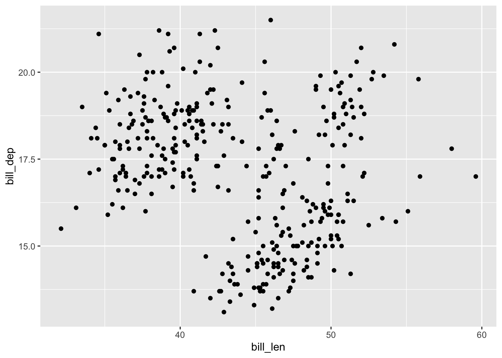
Either way, we get a blank plot. That’s because we haven’t told ggplot() what to plot: we only specified the data frame. Next, we will map variables to the x and y axes with the aesthetics function aes().
3.2 Aesthetic mappings (aes)
Aesthetic mappings define how variables in the data are mapped to visual properties of the plot, and are specified with the aes() function. For example, its x argument defines the variable (column) to be plotted along the x-axis.
Let’s create a scatter plot with the library size on the x-axis and the number of detected genes on the y-axis:
sample_stats |>
ggplot(aes(x = lib_size_M, y = n_detected))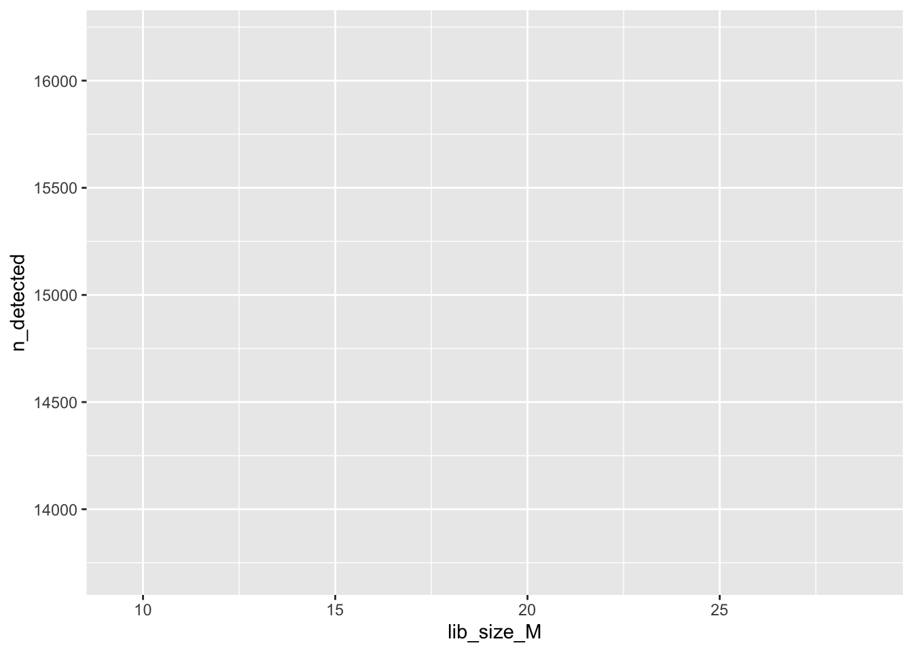
Now the axes are there, but there are still no data points, because we haven’t told ggplot2 how to represent the data.
3.3 Geoms
For that, we need to add a geometry (geom) layer, such as geom_point() for a scatter plot or geom_boxplot() for a box plot. Because both of our variables are continuous, a scatter plot is a good choice:
sample_stats |>
ggplot(aes(x = lib_size_M, y = n_detected)) +
geom_point()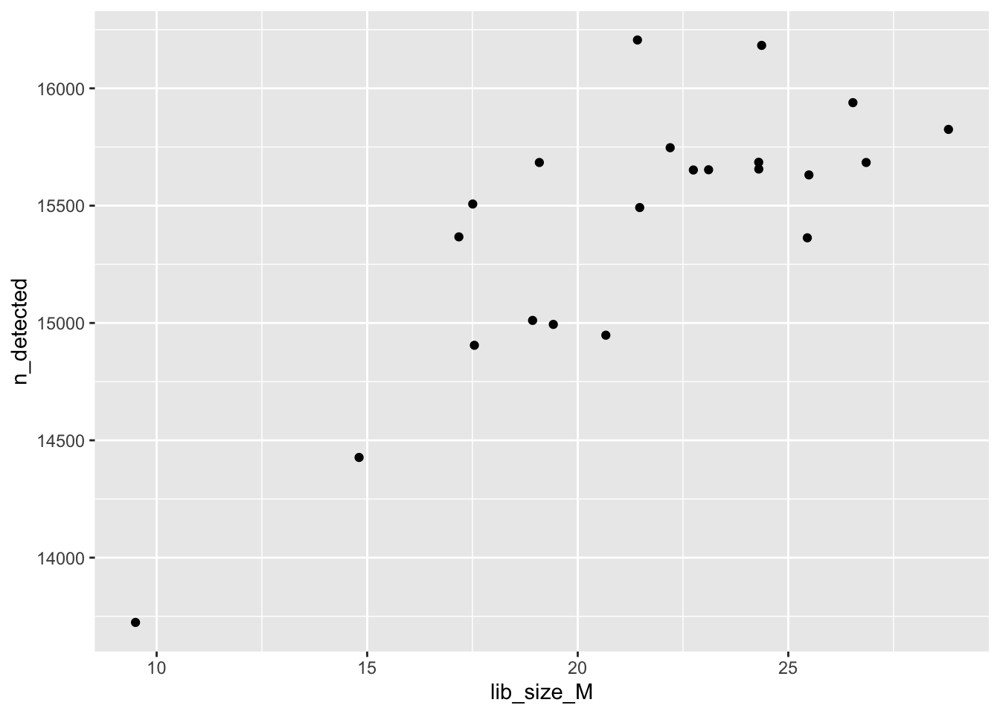
Finally, we have a plot!
Note that we use + rather than the pipe |> to add the geom: the pipe sends the data frame into ggplot, and from then on, we are adding layers to the plot with +. The + should always go at the end of a line, not at the start of the next one.
What does this plot tell you about the relationship between these variables? How do you interpret that?
The answer will be added after the lecture.
NoteMore about Positron’s Plots pane (Click to expand)
When you run plotting code interactively, the plot appears in the Plots pane in the Secondary Side Bar. A few useful features of this pane:
- The arrows at the top let you go back and forward through the plots you made earlier in your R session.
- The expand button opens the plot in a larger editor tab.
- If you use a dark color theme, click the circle icon at the top and select “Dark Filter” or “Follow Theme” to show plots on a dark background. This only affects how plots are shown in Positron, not how they look when you render or save them.
4 Mapping more variables
Besides x and y, there are other aesthetics, such as color, shape, and size. Let’s add a third variable to the scatter plot by coloring the points by treatment:
sample_stats |>
ggplot(aes(x = lib_size_M, y = n_detected, color = treatment)) +
geom_point()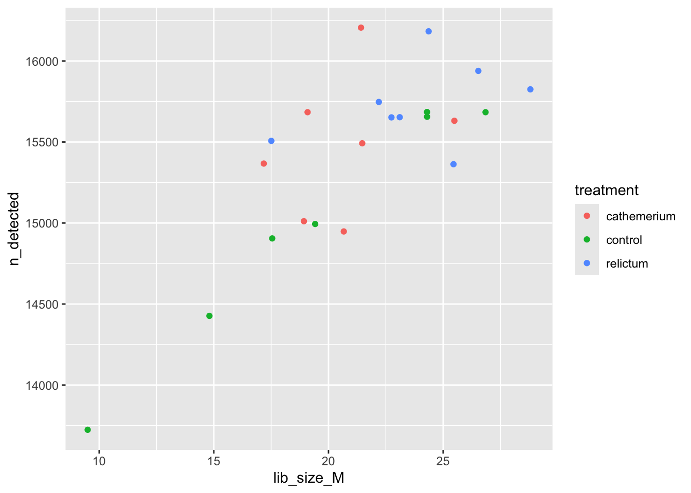
Now, each point is colored by the treatment of the sample. When a categorical variable is mapped to color, ggplot2 automatically assigns a color to each category, and adds a legend that shows which color corresponds to which category.
Exercise 1: Mapping versus setting colors
Remove
color = treatmentfrom the code above, and try each of the following two versions of thegeom_point()line. Compare the resulting plots: what happens to the colors and the legend?geom_point(color = "red")— a fixed value outsideaes()geom_point(aes(color = "red"))— a fixed value insideaes()
- Create a scatter plot with
lib_size_Mon the x-axis andn_detectedon the y-axis. Color the points bytreatment, and maptimeto the shape of the points.
NoteMore on mapping vs. setting (Click to expand)
Sometimes you want to give all points the same color or size. To map a variable to an aesthetic, put it inside aes(); to set an aesthetic to a fixed value, put it outside aes(), like with geom_point(color = "red") in the previous exercise.
Below, color is mapped to the treatment variable inside aes(), so it differs between points and gets a legend. By contrast, size is set to a fixed value outside aes(), so all points are equally large and there is no legend for size:
sample_stats |>
ggplot(aes(x = lib_size_M, y = n_detected, color = treatment)) +
geom_point(size = 4)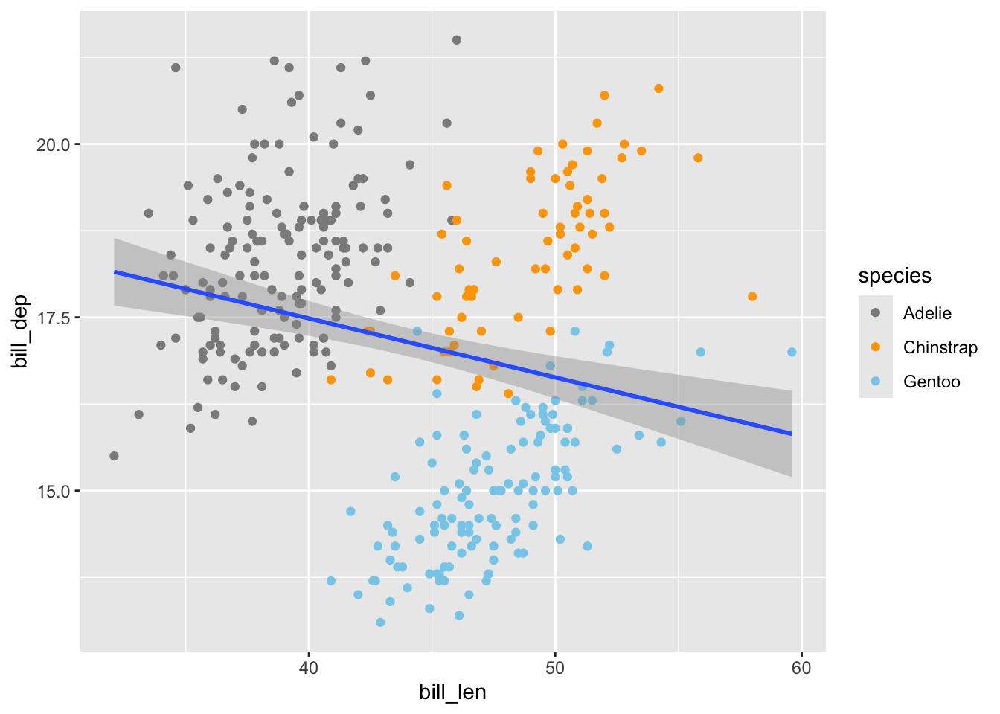
4.1 Global and local mappings
Mappings inside ggplot() are global and apply to all geom layers, whereas mappings inside a geom are local to that layer. To see the difference, let’s add a second geom, geom_smooth(), which adds a trend line:
sample_stats |>
ggplot(aes(x = lib_size_M, y = n_detected, color = treatment)) +
geom_point() +
geom_smooth(method = "lm")`geom_smooth()` using formula = 'y ~ x'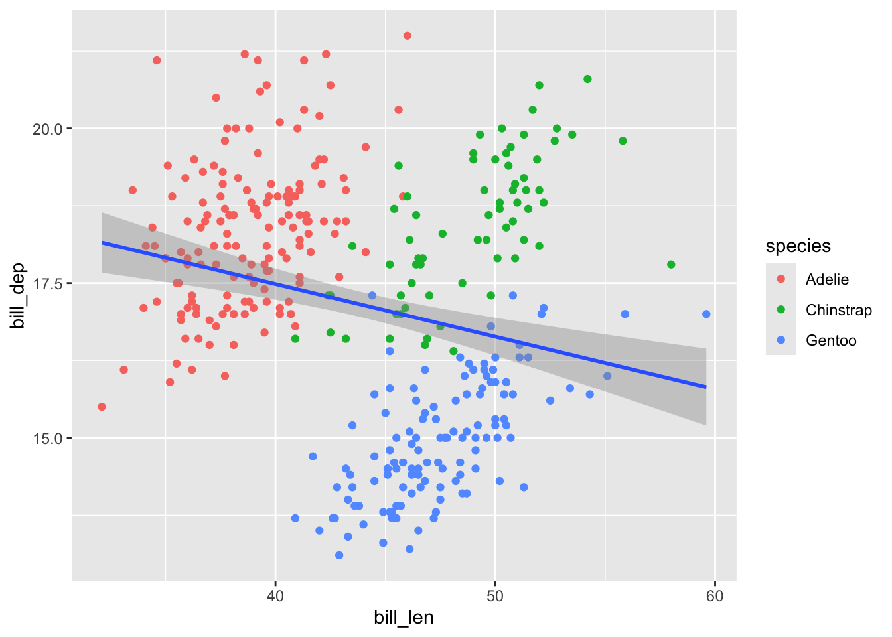
With method = "lm", the trend line is a straight line from a linear model (the default is a curved line). The message about the formula just tells you how the line was fitted, and you can ignore it.
Above, we mapped color = treatment at the global level inside ggplot(), so both the points and the lines are colored by treatment, and geom_smooth() fits a separate line for each treatment.
Now, we’ll map color = treatment at the local level inside geom_point() — only the points are colored by treatment, while geom_smooth() fits a single line across all samples, in the default color (blue):
sample_stats |>
ggplot(aes(x = lib_size_M, y = n_detected)) +
geom_point(aes(color = treatment)) +
geom_smooth(method = "lm")
5 Customizing plots
Next, we’ll change the look of our plot: its colors, titles and labels, and overall theme. These functions work the same way for any type of plot.
5.1 Adding labels and a theme
To add a title and change the axis labels, use the labs() function, with arguments title, x, and y. And to change the overall look of a plot, you can apply a pre-defined theme , such as theme_minimal(), theme_classic(), or theme_bw(). Let’s do both, and apply theme_bw():
sample_stats |>
ggplot(aes(x = lib_size_M, y = n_detected, color = treatment)) +
geom_point() +
labs(
title = "More genes are detected when the library size is larger",
x = "Library size (millions of reads)",
y = "Number of detected genes"
) +
theme_bw()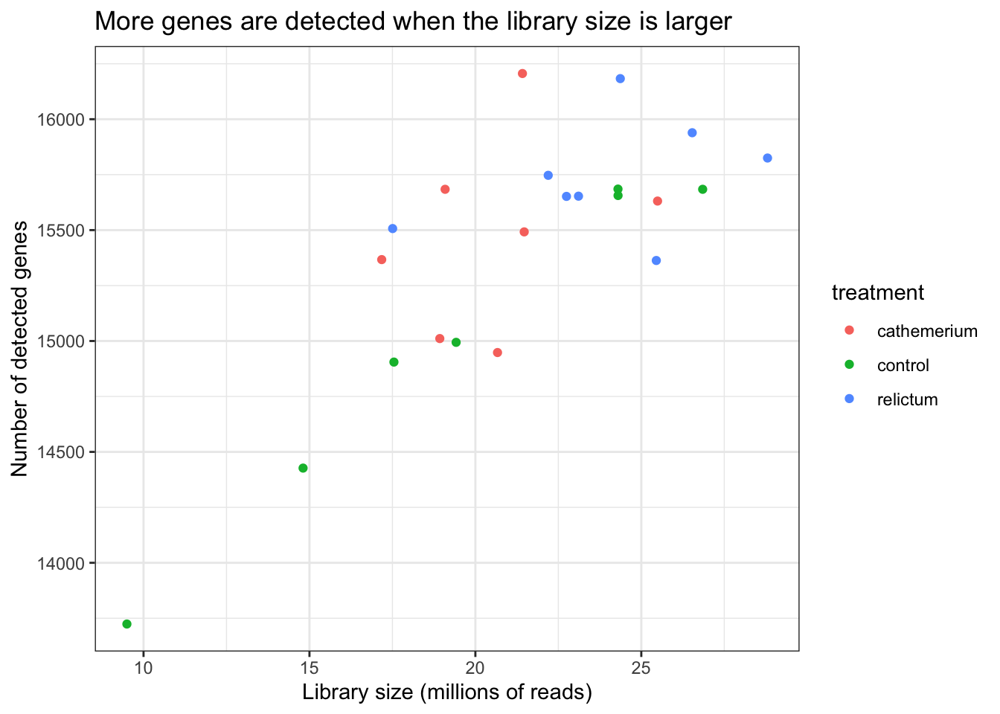
NoteCustomizing individual theme elements (Click to expand)
You can also customize individual theme elements like font sizes and the legend position with the theme() function.
There are many options (see the optional plotting self-study page), but as one quick example, let’s move the legend to the top and get rid of the so-called minor grid lines (the grid lines between those that mark the axis ticks):
sample_stats |>
ggplot(aes(x = lib_size_M, y = n_detected, color = treatment)) +
geom_point() +
labs(
title = "More genes are detected when the library size is larger",
x = "Library size (millions of reads)",
y = "Number of detected genes"
) +
theme_bw() +
theme(
legend.position = "top",
panel.grid.minor = element_blank()
)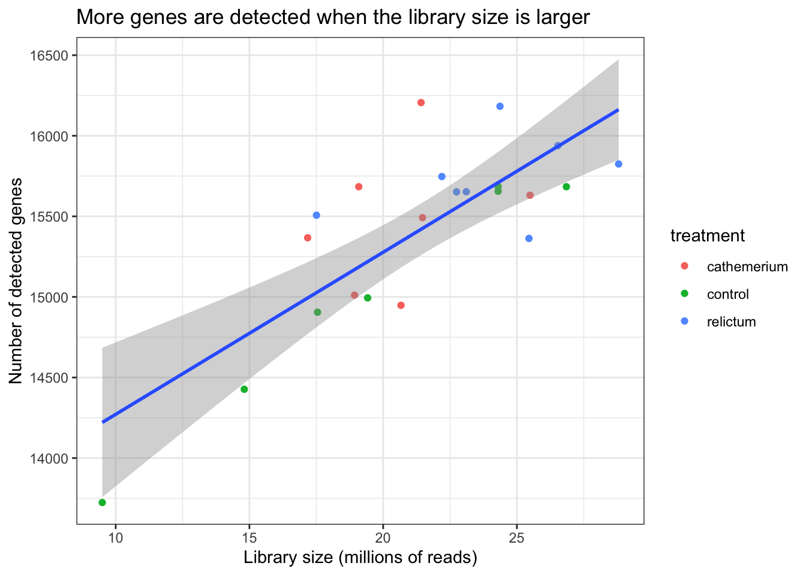
NoteManually changing the colors (Click to expand)
So far, we’ve used ggplot’s default colors. To pick the colors yourself, use the scale_color_manual() function:
sample_stats |>
ggplot(aes(x = lib_size_M, y = n_detected, color = treatment)) +
geom_point() +
scale_color_manual(values = c("orange", "grey55", "skyblue"))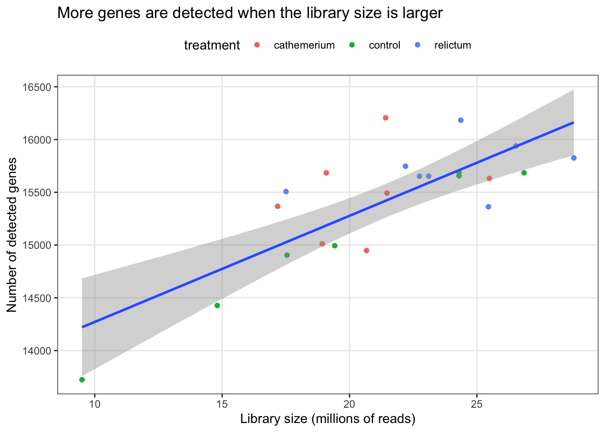
The colors are assigned in the order of the treatments in the legend. To make sure that each treatment gets the color you want, you can also name the colors: values = c(cathemerium = "orange", control = "grey55", relictum = "skyblue"). Run colors() to see the names of all colors that R knows. For ready-made color palettes, see the optional plotting self-study page.
Exercise 2: Predict and fix
Which plot do you think the code below will produce? Decide first, and then run the code to check.
sample_stats |> ggplot(aes(x = lib_size_M, y = n_detected)) + geom_point() + geom_smooth(aes(color = treatment), method = "lm")- Points and trend lines are both colored by treatment
- Black points, and a separate colored trend line for each treatment
- Black points, and a single blue trend line
The code below should produce a scatter plot with red points, a title, and the
theme_bw()theme, but it contains three mistakes. Find and fix them.sample_stats |> ggplot(aes(x = lib_size_M, y = n_detected)) |> geom_point(color = red) + labs(title = "Library size versus detected genes") theme_bw()
6 Other geoms
So far, we’ve only made scatter plots with geom_point(), but there are many other geoms to create different plot types. Here, we’ll explore two additional ones, bar graphs and box plots.
This week’s exercises will also cover violin plots, while the bonus page on plotting in R also covers histograms and a different way to make bar graphs. For more examples, see the ggplot2 cheat sheet .
One general observation is that once you know the basic syntax of ggplot, it is relatively easy to make many different types of plots because of the package’s consistent grammar.
6.1 Bar graphs with geom_col()
Bar graphs are commonly used to show a single number, like a mean or a count, per group. Let’s plot the library size of each sample with geom_col():
sample_stats |>
ggplot(aes(x = sample_id, y = lib_size_M)) +
geom_col()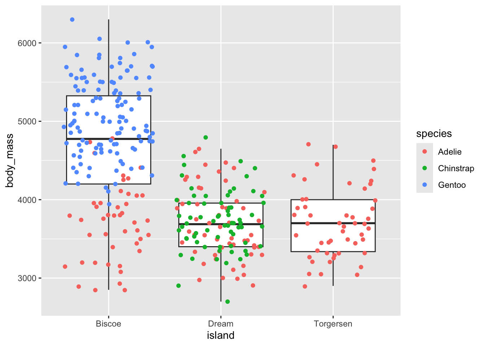
NoteSorting bars by value (Click to expand)
The samples are shown in alphabetical order. To sort the bars from low to high instead, you can use the fct_reorder() function, which turns a column (here, sample_id) into a factor whose levels (categories) are ordered by the values of another column (here, lib_size_M). (Factors are explained in more detail below.) You do this with mutate() before plotting:
sample_stats |>
mutate(sample_id = fct_reorder(sample_id, lib_size_M)) |>
ggplot(aes(x = sample_id, y = lib_size_M)) +
geom_col()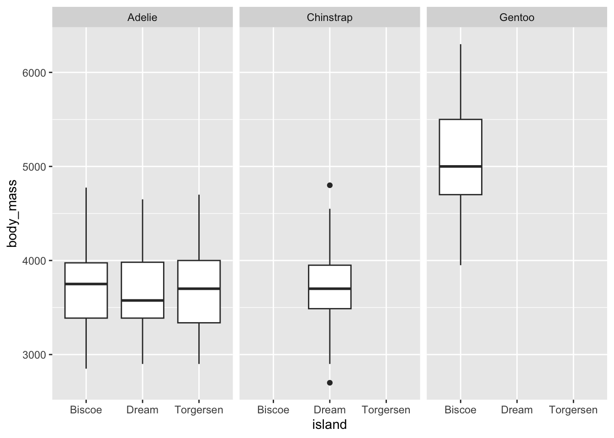
(Note the switch from |> between data frame steps, and + between plot layers.)
6.2 Box plots
Is library size related to treatment? A box plot is a good way to answer this, because it shows the distribution of a numeric variable for each category of a categorical variable:
sample_stats |>
ggplot(aes(x = treatment, y = lib_size_M)) +
geom_boxplot()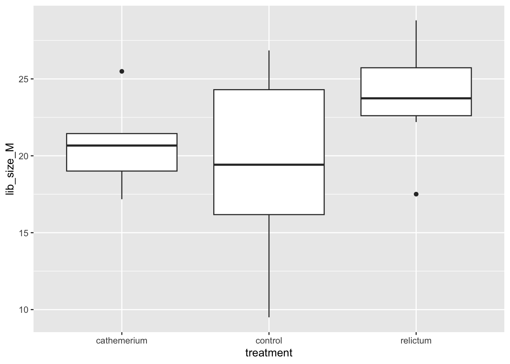
The relictum samples have slightly larger libraries, and library sizes vary a lot among the control samples. But each box contains samples from both time points: to split the boxes by time point, we can map time to an aesthetic as before.
We’ll use the fill aesthetic to color the boxes by time point. For “filled” shapes like boxes, color only changes the outline, while fill changes the inside:
sample_stats |>
ggplot(aes(x = treatment, y = lib_size_M, fill = time)) +
geom_boxplot()
6.3 Side note: custom order with factors
Above, the later time point (10 dpi) came first, because time is a character column whose values are sorted alphabetically. To fix this, you can turn the column into a factor, R’s way of storing categorical data that allows to set of custom order of categories (“levels”). This order is respected in plots, sorting, and statistical analyses.
We’ll turn time into a factor with the earlier time point (24 hpi) first, by modifying the column with mutate()2:
sample_stats <- sample_stats |>
mutate(time = factor(time, levels = c("24hpi", "10dpi")))Now, the time points are shown in the correct order:
sample_stats |>
ggplot(aes(x = treatment, y = lib_size_M, fill = time)) +
geom_boxplot()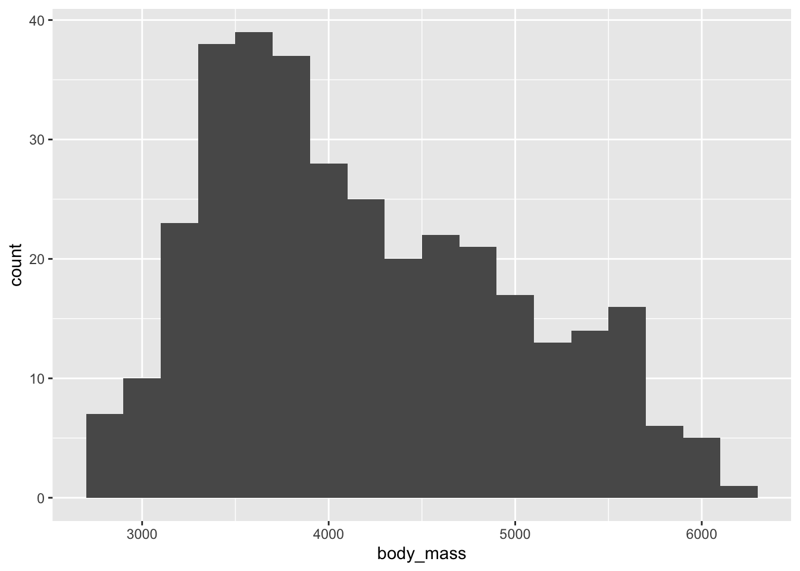
(This clarifies that the large variation among the control samples is mostly due to the control samples at 10 dpi, which have smaller libraries.)
Exercise 3: Coloring bars
Make the bar graph of library sizes per sample from above again, but with the bars colored by treatment. Should you use color or fill for this?
Self-study exercise: Adding data points to a box plot
Add the individual data points to the first box plot above (without the
fill), using thegeom_jitter()function.Click for the solution
sample_stats |> ggplot(aes(x = treatment, y = lib_size_M)) + geom_boxplot(outlier.shape = NA) + geom_jitter()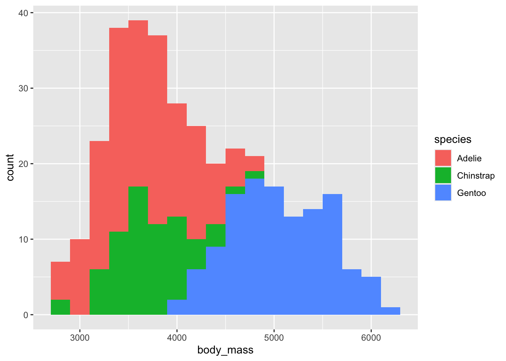
Note that without
outlier.shape = NA, the boxplot’s outliers would be shown twice: bygeom_boxplot()and bygeom_jitter().With only 3 or 4 samples per box, showing the individual data points is especially useful.
Color these points by time point.
Click for the solution
sample_stats |> ggplot(aes(x = treatment, y = lib_size_M)) + geom_boxplot(outlier.shape = NA) + geom_jitter(aes(color = time))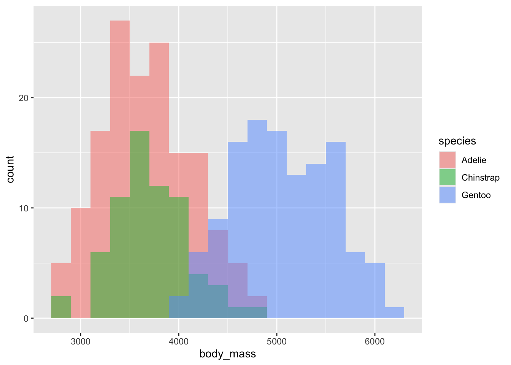
7 Exporting plots to files
To save a plot to a file, in formats like PNG, JPEG, or PDF, use the ggsave() function. First, save the plot that you want to export as an object — for example, the box plot with time points from above:
lib_size_plot <- sample_stats |>
ggplot(aes(x = treatment, y = lib_size_M, fill = time)) +
geom_boxplot()By default, ggsave() won’t create a folder that doesn’t exist, so first create a results folder in your week13 folder, if it doesn’t exist yet:
dir.create("results", showWarnings = FALSE)Then, save the plot:
ggsave(
filename = "results/lib_size_plot.png", # file path and name
plot = lib_size_plot, # what to save
width = 7, # in inches (default unit)
height = 5,
dpi = 300 # dots per inch, i.e. resolution
)8 Recap
In this lecture, you learned:
- The basic syntax of ggplot2, which builds plots layer by layer with
+ - How to map variables to aesthetics like
colorandfillwithaes(), for all geoms or for a single one - How to make scatter plots, bar graphs, and box plots with
geom_*()functions - How to customize plots with labels, themes, and colors
- How to change the order of categories by changing factor levels
- How to combine data wrangling and plotting in one pipeline
- How to save plots to files with
ggsave()